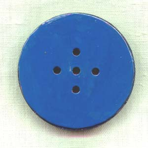
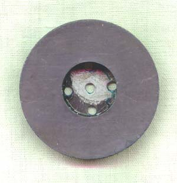
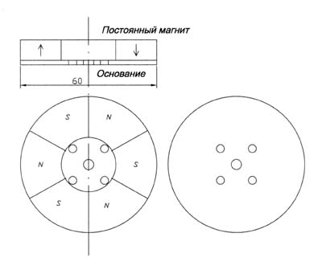
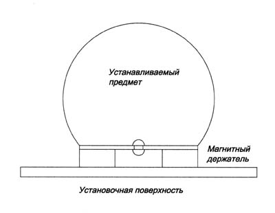

Магнитный держатель (фиксатор)
Магнитный держатель предназначен для установки и фиксации различных предметов на плоских стальных поверхностях или прижима их к этим поверхностям, например, автомобильных антенн, мигалок, сирен, громкоговорителей, плакатов и т. п.


Рис. 1. Магнитный держатель (фиксатор): вид сверху и снизу (диаметр 60 мм).
Магнитный держатель (рис. 2) состоит из кольцевого постоянного магнита из феррита бария (намагничивание 6-полюсное аксиальное) и приклеенной к нему круглой стальной пластины (основания) с крепежными отверстиями. За счет многополюсного намагничивания обеспечивается замыкание магнитного потока при установке держателя на стальной поверхности и увеличение силы сцепления. Чтобы магнит не повреждал установочную поверхность и не загрязнял прижимаемые предметы, можно наносить на него различные защитные покрытия.

Рис. 2. Конструкция магнитного держателя (фиксатора).

Рис. 3. Вариант использования магнитного держателя (фиксатора).
Магнитные держатели могут изготавливаться различных размеров, в зависимости от назначения.
Для шестиполюсного намагничивания кольцевого магнита использовалась установка импульсного намагничивания [4] в составе импульсного намагничивающего 6-полюсного устройства [5] и генератора мощных импульсов тока [1, 2].
Ссылки:
02.06.2004
09.09.2005
26.01.2006
22.06.2010
Альтернативные источники
энергии
Компьютеры и
Интернет
Магнитные поля
Механотронные системы
Перспективные
разработки
Электроника и
технология